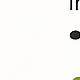

Se déplacer à Nice
Accueil
Check-in/Check-out
Équipements
Restauration
À visiter
Courses
Transports
Urgences
Météo

Tramway (Ligne 2)
– Arrêt
Ferber
ou
Carras
.
Site Lignes d’Azur
Vélo Bleu
– Stations disponibles tout autour.
Site Vélo Bleu
Trottinettes électriques
– Services disponibles via
Lime
ou
Dott
Gare SNCF la plus proche :
Nice Saint-Augustin